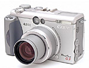

| Canon Powershot G3
After 18 months using the Canon Powershot S20, I was starting to feel slightly limited by the functionality on offer. And then Richard's Dad got a Fuji S602 as a retirement present, and I got camera envy. After many months of research, I'd decided that I wanted a Canon Powershot S45 as it seemed to have all of the functionality I wanted. Then I went into Jessops and tried one, and whilst it was great, it was still a little limited. So, I chatted to the guy and he suggested the Canon G3. They ordered one in for us to look at, and I started to look around the web for reviews. It seemed to offer everything I wanted now, as well as enough new features to keep me busy for a couple of years, and the deal was done. My first few weeks with the camera were a time of taking test photos, reading books, finding out the technical side of photography (this is the first camera I've had with manual settings) and generally getting to grips with the camera. I noticed immediately that the photos produced were sharper, and that the battery lasted way longer than the S20. Over the recent few months I've taken over 2000 photos, some which are good (by my standards) and some which are poor. The ones which are worse that I expected are almost always down to photographer error, and I make use of the G3's histogram and EXIF functionality to review my images and learn from my mistakes. The histogram is a particularly useful feature as you can review your images whilst on the camera to check the exposure and see immediately whether you've blown any areas of your image. I've found this to save me a lot of ruined shoots. Of course, the spending didn't stop with the camera. I've invested in a cleaning cloth, a couple of new CF cards (the G3 uses both type I and type II) and a Lowe Pro D-Res 25AW bag. I've also recently ordered a lens adapter and both a wide angle and telephoto lens which I'm awaiting to arrive. I've chosen a 52mm lens adapter over the canon 58mm adaptor mainly due to the fact that the 58mm blocks the autofocus lamp. The negative side of this is that with 52mm there is more of a risk of vignetting with the lenses. I'll report on this once I've had the lenses for a while. |
 Related Links:
|
|
Back to index page |